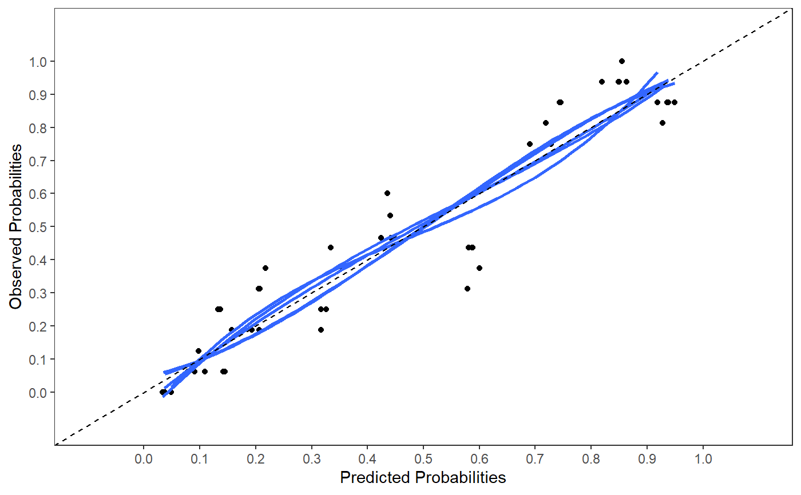

R/psfmi_perform.R
psfmi_perform.Rdpsfmi_perform Evaluate Performance of logistic regression models selected with
the psfmi_lr function of the psfmi package.
psfmi_perform( pobj, data_orig = NULL, nboot = 10, int_val = FALSE, method = NULL, nimp_boot_MI = NULL, p.crit = 1, mice_method = NULL, mice_niter = 10, mice_seed = NA, predictorMatrix = NULL, cal.plot = FALSE, plot.indiv = FALSE, groups_cal = 10 )
| pobj | An object of class |
|---|---|
| data_orig | dataframe of original dataset that contains missing data for method boot_MI |
| nboot | The number of bootstrap resamples, default is 10. |
| int_val | If TRUE internal validation is conducted in multiply imputed datasets.
See |
| method | Methods for internal validation in multiply imputed datasets. Choose MI_boot for bootstrapping in each imputed dataset and boot_MI for multiple imputation in each bootstrap sample. To use the second method data_orig has to be specified. The first method is faster. See details for more information. |
| nimp_boot_MI | Numerical scalar. Number of imputed datasets for method boot_MI.
When not defined, the number of multiply imputed datasets is used of the
previous call to the function |
| p.crit | A numerical scalar. P-value selection criterium used for backward selection during internal validation. When set at 1, pooling and internal validation is done without backward selection. |
| mice_method | The Multiple Imputation method used for each predictor with missing values.
For Multiple Imputation the |
| mice_niter | Numerical scalar. Default is 10. The number of iterations in Multiple Imputation.
See the |
| mice_seed | Numerical scalar. Default is random number generator initializeb by computer via set.seed(). |
| predictorMatrix | A numeric matrix of nrow(data) rows and ncol(data) columns, containing 0/1
data specifying the imputation models used to impute the predictors with missing data. Default
is that each variable is used to impute other variables. See the |
| cal.plot | If TRUE a calibration plot is generated. Default is FALSE. Can be used in combination with int_val = FALSE. |
| plot.indiv | If TRUE calibration plots for each separate imputed dataset are generated, otherwise all calibration plots are plotted in one figure. |
| groups_cal | A numerical scalar. Number of groups used on the calibration plot. Default is 10. If the range of predicted probabilities is too low 5 groups can be chosen. |
A psfmi_perform object from which the following objects can be extracted: res_boot,
result of pooled performance (in multiply imputed datasets) at each bootstrap step of ROC app (pooled
ROC), ROC test (pooled ROC after bootstrap model is applied in original multiply imputed datasets),
same for R2 app (Nagelkerke's R2), R2 test, Brier app and Brier test. Information is also provided
about testing the Calibration slope at each bootstrap step as interc test and
Slope test. The performance measures are pooled by a call to the function pool_performance. Another
object that can be extracted is intval, with information of the AUC, R2, Brier score and
Calibration slope averaged over the bootstrap samples, in terms of: Orig (original datasets),
Apparent (models applied in bootstrap samples), Test (bootstrap models are applied in original datasets),
Optimism (difference between apparent and test) and Corrected (original corrected for optimism).
For internal validation two methods can be used, MI_boot and boot_MI. MI_boot draws
for each bootstrap step the same cases in all imputed datasets. With boot_MI first bootstrap samples
are drawn from the original dataset with missing values and than multiple imputation is
applied. For multiple imputation the mice function from the mice package is used.
It is recommended to use a minumum of 100 bootstrap samples, which may take some time. The method
boot_MI is more time consuming than MI_boot.
Heymans MW, van Buuren S, Knol DL, van Mechelen W, de Vet HC. Variable selection under multiple imputation using the bootstrap in a prognostic study. BMC Med Res Methodol. 2007(13);7:33.
F. Harrell. Regression Modeling Strategies. With Applications to Linear Models, Logistic and Ordinal Regression, and Survival Analysis (2nd edition). Springer, New York, NY, 2015.
Van Buuren S. (2018). Flexible Imputation of Missing Data. 2nd Edition. Chapman & Hall/CRC Interdisciplinary Statistics. Boca Raton.
Harel, O. (2009). The estimation of R2 and adjusted R2 in incomplete data sets using multiple imputation. Journal of Applied Statistics, 36(10), 1109-1118.
Musoro JZ, Zwinderman AH, Puhan MA, ter Riet G, Geskus RB. Validation of prediction models based on lasso regression with multiply imputed data. BMC Med Res Methodol. 2014;14:116.
Wahl S, Boulesteix AL, Zierer A, Thorand B, van de Wiel MA. Assessment of predictive performance in incomplete data by combining internal validation and multiple imputation. BMC Med Res Methodol. 2016;16(1):144.
EW. Steyerberg (2019). Clinical Prediction MOdels. A Practical Approach to Development, Validation, and Updating (2nd edition). Springer Nature Switzerland AG.
http://missingdatasolutions.rbind.io/
res_psfmi <- psfmi_lr(data=lbpmilr, nimp=5, impvar="Impnr", Outcome="Chronic", predictors=c("Gender", "Pain","Tampascale","Smoking","Function", "Radiation", "Age"), p.crit = 1, method="D1")#> #> #>res_val <- psfmi_perform(res_psfmi, int_val = FALSE, p.crit=1, cal.plot=TRUE, plot.indiv=FALSE)#> #>res_val#> $ROC_pooled #> 95% Low ROC 95% Up #> ROC (logit) 0.7006584 0.8631544 0.9444357 #> #> $coef_pooled #> (Intercept) Gender Pain Tampascale Smoking Function #> -5.79886525 -0.26715138 0.52495881 0.10525269 0.16767371 -0.06610274 #> Radiation Age #> 0.26468506 -0.01577622 #> #> $R2_pooled #> [1] 0.4873082 #> #> $Brier_pooled #> [1] 0.149005 #> #> $nimp #> [1] 5 #>res_psfmi <- psfmi_lr(data=lbpmilr, nimp=5, impvar="Impnr", Outcome="Chronic", predictors=c("Gender", "Pain","Tampascale","Smoking","Function", "Radiation", "Age"), cat.predictors = "Carrying", keep.predictors = "Function", p.crit = 0.157, method="D1")#>#>#>#>#>#> #> #>res_val <- psfmi_perform(res_psfmi, int_val = TRUE, method = "MI_boot", nboot = 10, p.crit=0.157, cal.plot=FALSE, plot.indiv=FALSE)#> #>#> #>#>#>#>#> #> #>#> #>#>#>#>#>#>#> #> #>#> #>#>#>#>#>#>#> #> #>#> #>#>#>#>#> #> #>#> #>#>#>#>#>#> #> #>#> #>#>#>#>#>#> #> #>#> #>#>#>#>#>#>#>#> #> #>#> #>#>#>#>#>#>#> #> #>#> #>#>#>#>#>#>#> #> #>#> #>#>#>#>#>#>#> #> #>res_val$res_boot#> ROC app ROC test R2 app R2 test Brier app Brier test #> Boot 1 0.9110758 0.8588052 0.6295428 0.4842564 0.1150500 0.1525721 #> Boot 2 0.8896238 0.8566058 0.5731491 0.4639132 0.1329147 0.1555725 #> Boot 3 0.8362113 0.8480742 0.4131334 0.4541672 0.1626138 0.1573909 #> Boot 4 0.9100894 0.8500621 0.6109021 0.4618677 0.1200092 0.1618180 #> Boot 5 0.8265091 0.8496770 0.4004790 0.4610198 0.1670022 0.1551066 #> Boot 6 0.8201598 0.8401271 0.3968899 0.4440040 0.1678898 0.1569114 #> Boot 7 0.9160906 0.8416973 0.6351294 0.4335982 0.1206571 0.1706967 #> Boot 8 0.8762975 0.8606930 0.5371567 0.4781799 0.1408292 0.1503402 #> Boot 9 0.8833321 0.8508829 0.5383597 0.4622218 0.1383179 0.1583681 #> Boot 10 0.8644897 0.8645406 0.4833872 0.4824141 0.1406172 0.1509797 #> interc test Slope test #> Boot 1 -0.11353908 0.7837105 #> Boot 2 -0.35407878 0.6987520 #> Boot 3 0.20399166 1.0969773 #> Boot 4 -0.26298061 0.6918186 #> Boot 5 -0.16922577 1.0869072 #> Boot 6 0.04768064 1.0589084 #> Boot 7 -0.26028944 0.6432410 #> Boot 8 -0.01101830 0.8189719 #> Boot 9 -0.38673738 0.8096453 #> Boot 10 0.30662713 0.9206403res_val$intval#> Orig Apparent Test Optimism Corrected #> AUC 0.8659853 0.8733879 0.8521165 0.02127141 0.8447139 #> R2 0.4885571 0.5218129 0.4625642 0.05924871 0.4293083 #> Brier 0.1456551 0.1405901 0.1569756 -0.01638552 0.1620406 #> Slope 1.0000000 1.0000000 0.8609573 0.13904274 0.8609573